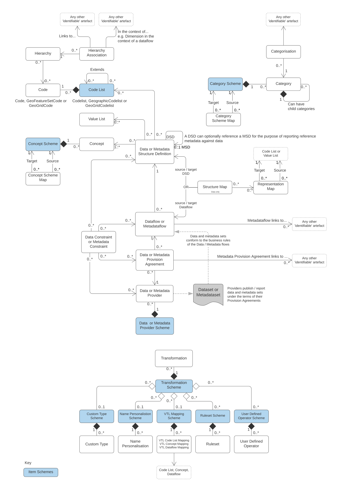

Processes and Business Scope¶
Process Patterns¶
SDMX identifies three basic process patterns regarding the exchange of statistical data and metadata. These can be described as follows:
- Bilateral exchange: All aspects of the exchange process are agreed between counterparties, including the mechanism for exchange of data and metadata, the formats, the frequency or schedule, and the mode used for communications regarding the exchange. This is perhaps the most common process pattern.
- Gateway exchange: Gateway exchanges are an organized set of bilateral exchanges, in which several data and metadata collecting organizations or individuals agree to exchange the collected information with each other in a single, known format, and according to a single, known process. This pattern has the effect of reducing the burden of managing multiple bilateral exchanges (in data and metadata collection) across the sharing organizations/individuals. This is also a very common process pattern in the statistical area, where communities of institutions agree on ways to gain efficiencies within the scope of their collective responsibilities.
- Data-sharing exchange: Open, freely available data formats and process patterns are known and standard. Thus, any organization or individual can use any counterparty’s data and metadata (assuming they are permitted access to it). This model requires no bilateral agreement, but only requires that data and metadata providers and consumers adhere to the standards.
This document specifies the SDMX standards designed to facilitate exchanges based on any of these process patterns, and shows how SDMX offers advantages in all cases. It is possible to agree bilaterally to use a standard format (such as SDMX-ML or SDMX-JSON); it is possible for data senders in a gateway process to use a standard format for data exchange with each other, or with any data providers who agree to do so; it is possible to agree to use the full set of SDMX standards to support a common data-sharing process of exchange, whether based on an SDMX-conformant registry or some other architecture.
The standards specified here specifically support a data-sharing process based on the use of central registry services. Registry services provide visibility into the data and metadata existing within the community, and support the access and use of this data and metadata by providing a set of triggers for automated processing. The data or metadata itself is not stored in a central registry – these services merely provide a useful set of metadata about the data (and additional metadata) in a known location, so that users/applications can easily locate and obtain whatever data and/or metadata is registered. The use of standards for all data, metadata, and the registry services themselves is ubiquitous, permitting a high level of automation within a data-sharing community.
It should be pointed out that these different process models are not mutually exclusive – a single system capable of expressing data and metadata in SDMX-conformant formats could support all three scenarios. Different standards may be applicable to different processes (for example, many registry services interfaces are used only in a data-sharing scenario) but all have a common basis in a shared information model.
In addition to looking at collection and reporting, it is also important to consider the dissemination of data. Data and metadata – no matter how they are exchanged between counterparties in the process of their development and creation – are all eventually supplied to an end user of some type. Often, this is through specific applications inside of institutions. But more and more frequently, data and metadata are also published on websites in various formats. The dissemination of data and its accompanying metadata on the web is a focus of the SDMX standards. Standards for statistical data and metadata allow improvements in the publication of data – it becomes more easily possible to process a standard format once the data is obtained, and the data and metadata are linked together, making the comprehension and further processing of the data easier.
In discussions of statistical data, there are many aspects of its dissemination which impact data quality: data discovery, ease of use, and timeliness. SDMX standards provide support for all of these aspects of data dissemination. Standard data formats promote ease of use, and provide links to relevant metadata. The concept of registry services means that data and metadata can more easily be discovered. Timeliness is improved throughout the data lifecycle by increases in efficiency, promoted through the availability of metadata and ease of use.
It is important to note that SDMX is primarily focused on the exchange and dissemination of statistical data and metadata. There may also be many uses for the standard model and formats specified here in the context of internal processing of data that are not concerned with the exchange between organizations and users, however. It is felt that a clear, standard formatting of data and metadata for the purposes of exchange and dissemination can also facilitate internal processing by organizations and users, but this is not the focus of the specification.
SDMX and Process Automation¶
Statistical data and metadata exchanges employ many different automated processes, but some are of more general interest than others. There are some common information technologies that are nearly ubiquitous within information systems today. SDMX aims to provide standards that are most useful for these automated processes and technologies.
Briefly, these can be described as:
- Batch Exchange of Data and Metadata: The transmission of whole or partial databases between counterparties, including incremental updating.
- Provision of Data and Metadata on the Internet: Internet technology - including its use in private or semi-private TCP/IP networks - is extremely common. This technology includes XML, JSON and REST web services as primary mechanisms for automating data and metadata provision, as well as the more traditional static HTML and database-driven publishing.
- Generic Processes: While many applications and processes are specific to some set of data and metadata, other types of automated services and processes are designed to handle any type of statistical data and metadata whatsoever. This is particularly true in cases where portal sites and data feeds are made available on the Internet.
- Presentation and Transformation of Data: In order to make data and metadata useful to consumers, they must support automated processes that transform them into application-specific processing formats, other standard formats, and presentational formats. Although not strictly an aspect of exchange, this type of automated processing represents a set of requirements that must be supported if the information exchange between counterparties is itself to be supported.
The SDMX standards specified here are designed to support the requirements of all of these automation processes and technologies.
Statistical Data and Metadata¶
To avoid confusion about which “data” and “metadata” are the intended content of the SDMX formats specified here, a statement of scope is offered. Statistical “data” are sets of often numeric observations which typically have time associated with them. They are associated with a set of metadata values, representing specific concepts, which act as identifiers and descriptors of the data. These metadata values and concepts can be understood as the named dimensions of a multi-dimensional co-ordinate system, describing what is often called a “cube” of data.
SDMX identifies a standard technique for modelling, expressing, and understanding the structure of this multi-dimensional “cube”, allowing automated processing of data from a variety of sources. This approach is widely applicable across types of data and attempts to provide the simplest and most easily comprehensible technique that will support the exchange of this broad set of data and related metadata.
The term “metadata” is very broad indeed. A distinction can be made between “structural” metadata – those concepts used in the description and identification of statistical data and metadata – and “reference” metadata – the larger set of concepts that describe and qualify statistical data sets and processing more generally, and which are often associated not with specific observations or series of data, but with entire collections of data or even the institutions which provide that data.
The SDMX Information Model provides for the structuring not only of data, but also of “reference” metadata. While these reference metadata structures exist independent of the data and its structural metadata, they are often linked. The SDMX Information Model provides for the attachment of reference metadata to any part of the data or structural metadata, as well as for the reporting and exchange of the reference metadata and its structural descriptions. This function of the SDMX standards supports many aspects of data quality initiatives, allowing as it does for the exchange of metadata in its broadest sense, of which quality-related metadata is a major part.
Metadata are associated not only with data, but also with the process of providing and managing the flow of data. The SDMX Information Model provides for a set of metadata concerned with “data provisioning” – metadata which are useful to those who need to understand the content and form of a data provider’s output. Each data provider can describe in standard fashion the content of and dependencies within the data and metadata sets which they produce, and supply information about the scheduling and mechanism by which their data and metadata are provided. This allows for automation of some validation and control functions, as well as supporting management of data reporting.
SDMX also recognizes the importance of classification schemes in organizing and managing the exchange and dissemination of data and metadata. It is possible to express information about classification schemes and domain categories in SDMX, along with their relationships to data and metadata sets, as well as to categorize other objects in the model.
The SDMX standards offer a common model, a choice of syntax and, for XML, a choice of data formats which support the exchange of any type of statistical data meeting the definition above; several optimized formats are specified based on the specific requirements of each implementation, as described below in the SDMX-ML section.
The formal objects in the information model are presented schematically in Figure 1, and are discussed in more detail elsewhere in this document.

Figure 1. High Level Schematic of Major Artefacts in the SDMX 3.0 Information Model
The SDMX View of Statistical Exchange¶
Version 1.0 of ISO/TS 17369 SDMX covered statistical data sets and the metadata related to the structure of these data sets. This scope was useful in supporting the different models of statistical exchange (bilateral exchange, gateway exchange, and data-sharing) but was not by itself sufficient to support them completely. Versions 2.0 and 2.1 provide a much more complete view of statistical exchange, so that an open data-sharing model can be fully supported, and other models of exchange can be more completely automated. In order to produce technical standards that will support this increased scope, the SDMX Information Model provides a broader set of formal objects which describe the actors, processes, and resources within statistical exchanges.
It is important to understand the set of formal objects not only in a technical sense, but also in terms of what they represent in the real-world exchange of statistical data and metadata.
The first version of SDMX provided for data sets - specific statistical data reported according to a specific structure, for a specific time range - and for data structure definitions - the metadata which describes the structure of statistical data sets. These are important objects in statistical exchanges, and are retained and enhanced in the second version of the standards in a backward-compatible form. A related object in statistical exchanges is the “data flow” - this supports the concept of data reporting or dissemination on an ongoing basis. “Data flows” can be understood as data sets which are not bounded by time. Data structures are owned and maintained by agencies - in a similar fashion, data flows are owned by maintenance agencies.
SDMX allows for the publication of statistical data (and the related structural metadata) but also provided for the standard, systematic representation of reference metadata. In version 2.1, reference metadata were reported independent of the statistical data. However, in 3.0 reference metadata associated directly with data such as footnotes are reported as attributes of the data set. For other reference metadata, principally that linked to structures like “concepts”, SDMX provides reference “metadata sets”, “metadata structure definitions”, and “metadata flows”. These objects are very similar to data sets, data structure definitions, and data flows, but concern reference metadata rather than statistical observations. In the same way that data providers may publish statistical data, they may also publish reference metadata. Metadata structural definitions are maintained by agencies in a fashion similar to the way that agencies maintain data structure definitions, the structural definitions of data sets.
The structural definitions of both data and reference metadata associate specific statistical concepts with their representations, whether textual, coded, etc. These concepts are taken from a “concept scheme” which is maintained by a specific agency. Concept schemes group a set of concepts, provide their definitions and names, and allow for semantic relationships to be expressed, when some concepts are specializations of others. It is possible for a single concept scheme to be used both for data structures - key families - and for reference metadata structures.
Inherent in any statistical exchange – and in many dissemination activities – is a concept of “service level agreement”, even if this is not formalized or made explicit. SDMX incorporates this idea in objects termed “provision agreements”. Data providers may provide data to many different data flows. Data flows may incorporate data coming from more than one data provider. Provision agreements are the objects which tell you which data providers are supplying what data to which data flows. Similarly, metadata provision agreements for metadata flows.
Provision agreements allow for a variety of information to be made available: the schedule by which statistical data or metadata is reported or published, the specific topics about which data or metadata is reported within the theoretically possible set of data (as described by a data structure definition or reference metadata structure definition), and the time period covered by the statistical data and metadata. This set of information is termed “constraint” in the SDMX Information Model.
A brief summary of the objects described in the information model includes:
- Data Set: Data is organized into discrete sets, which include particular observations for a specific period of time. A data set can be understood as a collection of similar data, sharing a structure, which covers a fixed period of time.
- Data Structure Definition (DSD, also known as Key Family in Version 2.0): Each data set has a set of structural metadata. These descriptions are referred to in SDMX as Data Structure Definitions, which include information about how concepts are associated with the measures, dimensions, and attributes of a data “cube,” along with information about the representation of data and related identifying and descriptive (structural) metadata. In Version 2.1, the term “Key Family” was replaced by “Data Structure Definition” (DSD) both in XML Schemas and the Information Model. The DSD has been modified in version 3.0 to better support microdata by providing the option to define multiple measures and for attributes and measures to take arrays of values. An optional reference to a Metadata Structure Definition has also been added for describing the reference metadata associated with the data. When reported, these reference metadata are included as part of the dataset.
- Code list: Code lists enumerate a set of codes to be used in the representation of dimensions, attributes, and other structural parts of SDMX. Codes can be organised into simple hierarchies within a code list, and more complex hierarchies potentially involving multiple code lists using hierarchy and hierarchy association structures.
- Value list: Value lists introduced in version 3.0 are similar to codelists with the exception that the items do not need to conform to the usual SDMX rules for identifiable objects. That allows the values to include characters such as currency symbols (e.g. ¥) which would otherwise make illegal codes. However, unlike codes, values are not individually identifiable. Value lists find application in concepts and data structures definitions for less structured data and microdata enumerations and can be mapped to other value or code lists using representation maps.
- Organisation Scheme: Organisations and organisation structure can be defined in an Organisation Scheme. Specific Organisation Schemes exist for Maintenance Agency, Data Provider, Metadata Provider, Data Consumer, and Organisation Unit.
- Category Scheme and Categorisation: Category schemes are made up of a hierarchy of categories, which in SDMX may include any type of useful classification for the organization of data and metadata. A Categorisation links a category to an identifiable object. In this way sets of objects can be categorised. A statistical subject-matter domain scheme is implemented in SDMX as a Category Scheme.
- Concept Scheme: A concept scheme is a maintained list of concepts that are used in data structure definitions and metadata structure definitions. There can be many such concept schemes. A “core” representation of the concept can be specified (e.g. a core code list, or other representation such as “date”). Note that this core representation can be overridden in the data structure definition or metadata structure definition that uses the concept. Indeed, organisations wishing to remain with version 1.0 key family schema specifications will continue to declare the representation in the key family definition.
- Metadata Set: A reference metadata set is a set of information pertaining to an object within the formal SDMX view of statistical exchange: they may describe the maintainers of data or structural definitions; they may describe the schedule on which data is released; they may describe the flow of a single type of data over time; they may describe the quality of data, etc. In SDMX, the creators of reference metadata may take whatever concepts they are concerned with, or obliged to report, and provide a reference metadata set containing that information.
- Metadata Structure Definition: A reference metadata set also has a set of structural metadata which describes how it is organized. This metadata set identifies what reference metadata concepts are being reported, how these concepts relate to each other (typically as hierarchies), what their presentational structure is, how they may be represented (as free text, as coded values, etc.), and with which formal SDMX object types they are associated.
- Dataflow Definition: In SDMX, data sets are reported or disseminated according to a data flow definition. The data flow definition identifies the data structure definition and may be associated with one or more subject matter domains via a Categorisation (this facilitates the search for data according to organised category schemes). Constraints, in terms of reporting periodicity or sub set of possible keys that are allowed in a data set, may be attached to the data flow definition.
- Metadataflow Definition: A metadata flow definition is very similar to a data flow definition, but describes, categorises, and constrains metadata sets.
- Data Provider: An organization which produces data is termed a data provider.
- Metadata Provider: An organization which produces reference metadata is termed a metadata provider.
- Provision Agreement (Metadata Provision Agreement): The set of information which describes the way in which data sets and metadata sets are provided by a data/metadata provider. A provision agreement can be constrained in much the same way as a data or metadata flow definition. Thus, a data provider can express the fact that it provides a particular data flow covering a specific set of countries and topics, Importantly, the actual source of registered data or metadata is attached to the provision agreement (in terms of a URL). The term “agreement” is used because this information can be understood as the basis of a “service-level agreement”. In SDMX, however, this is informational metadata to support the technical systems, as opposed to any sort of contractual information (which is outside the scope of a technical specification). In version 3.0, metadata provision agreement and data provision agreement are two separate artefacts.
- Constraint: Data and Metadata Constraints describe a subset of a data source or metadata source, and may also provide information about scheduled releases of data. They are associated with data / metadata providers, provision agreements, data flows, metadataflows, data structure definitions and metadata structure definitions.
- Structure Map: Structure maps describes a mapping between data structure definitions or dataflows for the purpose of transforming a data set into a different structure. The mapping rules are defined using one or more component maps which each map in turn describes how one or more components from the source data structure definition map to one or more components in that of the target. Represent maps act as lookup tables and specific provision is made for mapping dates and times.
- Representation Map: Representation maps describe mappings between source value(s) and target value(s) where the values are restricted to those in a code list, value list or be of a certain type such as integer or string.
- Item Scheme Map: An item scheme map describes mapping rules between any item scheme with the exception of code lists and value lists which use representation maps. The version 3.0 information model provides four item scheme maps: organisation scheme map, concept scheme map, category scheme map and reporting taxonomy map. Organisation scheme map and reporting scheme map have been omitted from the information model schematic in Figure 1.
- Reporting Taxonomy: A reporting taxonomy allows an organisation to link (possibly in a hierarchical way) a number of cube or data flow definitions which together form a complete “report” of data or metadata. This supports primary reporting which often comprises multiple cubes of heterogeneous data, but may also support other collection and reporting functions. It also supports the specification of publications such as a yearbook, in terms of the data or metadata contained in the publication.
- Process: The process class provides a way to model statistical processes as a set of interconnected process steps. Although not central to the exchange and dissemination of statistical data and metadata, having a shared description of processing allows for the interoperable exchange and dissemination of reference metadata sets which describe processes-related concepts.
- Hierarchy: Describes complex code hierarchies principally for data discovery purposes. The codes themselves are referenced from the code lists in which they are maintained.
- Hierarchy Association: A hierarchy association links a hierarchy to something that needs it like a dimension. Furthermore, the linking can be specified in the context of another object such as a dimension in the context of a dataflow. Thus, a dimension in a data structure definition could have different hierarchies depending on the dataflow.
- Transformation Scheme: A transformation scheme is a set of Validation and Transformation Language (VTL) transformations aimed at obtaining some meaningful results for the user (e.g., the validation of one or more data sets). The set of transformations is meant to be executed together (in the same run) and may contain any number of transformations in order to produce any number of results. Thus, a transformation scheme can be considered as a VTL ‘program’.
SDMX Registry Services¶
In order to provide visibility into the large amount of data and metadata which exists within the SDMX model of statistical exchange, it is felt that an architecture based on a set of registry services is potentially useful. A “registry” – as understood in webservices terminology – is an application which maintains and stores metadata for querying, and which can be used by any other application in the network with sufficient access privileges (though note that the mechanism of access control is outside of the scope of the SDMX standard). It can be understood as the index of a distributed database or metadata repository which is made up of all the data provider’s data sets and reference metadata sets within a statistical community, located across the Internet or similar network.
Note that the SDMX registry services are not concerned with the storage of data or reference metadata. The assumption is that data and reference metadata lives on the sites of its data and metadata providers. The SDMX registry services concern themselves with providing visibility of the data and reference metadata, and information needed to access the data and reference metadata. Thus, a registered data set will have its URL available in the registry, but not the data itself. An application which wishes to access that data would query the registry, perhaps by drilling down via a Category Scheme and Dataflow, for the URL of a registered data source, and then retrieve the data directly from the data provider (using an SDMX REST API query message or other mechanism).
SDMX does not require a particular technology implementation of the registry – instead, it specifies the standard interfaces which may be supported by a registry. Thus, users may implement an SDMX-conformant registry in any fashion they choose, provided the interfaces are supported as specified in the Registry Specification Section. These interfaces are expressed as XML documents, but also REST API request/response messages
The registry services discussed here can be briefly summarized:
- Maintenance of Structural Metadata: This registry service allows users with maintenance agency access privileges to submit and modify structural metadata. In this aspect the registry is acting as a structural metadata repository. However, it is permissible in an SDMX structure to submit just the “stub” of the structural object, such as a code list, and for this stub to reference the actual location from where the metadata can be retrieved, either from a file or a structural metadata resource, such as another registry.
- Registration of Data and Metadata Sources: This registry service allows users with maintenance agency access privileges to inform the registry of the existence and location (for retrieval) of data sets and reference metadata sets. The registry stores metadata about these objects, and links it to the structural metadata that give sufficient structural information for an application to process it, or for an application to discover its existence. Objects in the registry are organized and categorized according to one or more category schemes.
- Querying: The registry services have interfaces for querying the metadata contained in a registry, so that applications and users can discover the existence of data sets and reference metadata sets, structural metadata, the providers/agencies associated with those objects, and the provider agreements which describe how the data and metadata are made available, and how they are categorized.
- Subscription/Notification: It is possible to “subscribe” to specific objects in a registry, so that a notification will be sent to all subscribers whenever the registry objects are updated.
RESTful Web services¶
Web services allow computer applications to exchange data directly over the Internet, essentially allowing modular or distributed computing in a more flexible fashion than ever before. In order to allow web services to function, however, many standards are required: for requesting and supplying data; for expressing the enveloping data which is used to package exchanged data; for describing web services to one another, to allow for easy integration into applications that use other web services as data resources.
Version 3.0 has standardized on RESTful web services with a OpenAPI specification published on the SDMX Technical Working Group’s GitHub repository. There are five ‘resources’:
- structure — retrieval and maintenance of structural metadata
- data — retrieval of data
- schema — retrieval of XML schemas to validate specific data or metadata sets
- availability — retrieval of information on the data available for a Dataflow
- metadata — retrieval of reference metadata
The following conceptual example uses the ‘data’ resource to query a data repository for a series identified by the key ‘M.USD.EUR.SP00.A’ in the EXR (ECB exchange rates) Dataflow:
https://ws-entry-point/data/dataflow/ECB/EXR/1.0.0/M.USD.EUR.SP00.A